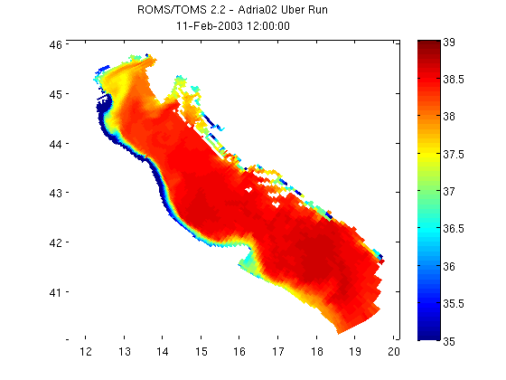

Contents
NCGEODATASET GEODEMO_1C
Method C: Read surface salinity with curly brace syntax: s = nc{'salt'}(1,end,:,:); Most compact general method, but with functionality limited to reading data, obtaining an interoperabily grid structure, and acquiring attributes.
% OPeNDAP Data URL for a CF-Compliant curvilinear ROMS model dataset url ='http://geoport.whoi.edu/thredds/dodsC/examples/bora_feb.nc'; nc = ncgeodataset(url)
nc =
ncgeodataset handle
Properties:
location: 'http://geoport.whoi.edu/thredds/dodsC/examples/bora_feb.nc'
netcdf: [1x1 ucar.nc2.dataset.NetcdfDataset]
variables: {80x1 cell}
Take a look at the variables available within the dataset
To access the properties we can use typical dot notation like with ordinary Matlab structures. Here we want to get a list of the variables in the dataset we are looking at.
nc.variables
ans =
'AKs'
'AKt'
'AKv'
'Akk_bak'
'Akp_bak'
'Akt_bak'
'Akv_bak'
'Cs_r'
'Cs_w'
'Falpha'
'Fbeta'
'Fgamma'
'M2nudg'
'M3nudg'
'Tcline'
'Tnudg'
'Znudg'
'Zob'
'Zos'
'angle'
'dstart'
'dt'
'dtfast'
'el'
'f'
'gamma2'
'gls_Kmin'
'gls_Pmin'
'gls_c1'
'gls_c2'
'gls_c3m'
'gls_c3p'
'gls_cmu0'
'gls_m'
'gls_n'
'gls_p'
'gls_sigk'
'gls_sigp'
'h'
'hc'
'mask_psi'
'mask_rho'
'mask_u'
'mask_v'
'nAVG'
'nHIS'
'nRST'
'nSTA'
'ndefHIS'
'ndtfast'
'ntimes'
'ntsAVG'
'pm'
'pn'
'rdrg'
'rdrg2'
'rho0'
'salt'
'spherical'
'temp'
'theta_b'
'theta_s'
'tnu2'
'u'
'ubar'
'v'
'vbar'
'xl'
'zeta'
'lat_psi'
'lat_rho'
'lat_u'
'lat_v'
'lon_psi'
'lon_rho'
'lon_u'
'lon_v'
'ocean_time'
's_rho'
's_w'
Determine the shape of the selected variable
The size method is a method of ncgeodataset that returns the length of each of the dimensions of a given variable in the dataset. This is a lot like Matlab's internal size command, but in this case we haven't even loaded any data into memory yet. All this information comes from the netcdf-java cdm.
nc.size('salt')
ans =
8 20 60 160
Use legacy syntax for data access in NCTOOLBOX
The curly brace syntax below should be familiar njTBX or Chuck Denham's NetCDF users. Put curly braces around a string containing the variable name, and then use regular matlab matrix indexing. If no indices are included, a geovariable object is returned. (:) can be used for the entire variable.)
% let take a look at the dimension names first, which will inform how % we need to specify the indices nc.dimensions('salt') % We see that we have time, z, y, x dimensions, in that order salinity = nc{'salt'}(1, end, :, :); size(salinity) salinity = squeeze(double(salinity)); % This may be done already by using {}
ans =
'ocean_time'
's_rho'
'eta_rho'
'xi_rho'
ans =
1 1 60 160
Use legacy syntax for coordinate axes in NCTOOLBOX
The grid method in this syntax is the exact same command as the grid_interop method in the approach from Method 1. As in accessing the variable values, use the same arguments to access the coordinate values for the given variable and subset, but append a .grid at the end.
% The coordinate data is also transformed to a more standardized form: % % Coordinates recoginized by the netcdf-java cdm as time coordinates, % are converted to Matlab's datenum. Longitude coordinates that use a % 0-360 degree scheme are converted to -180 to 180 values. Projected x % and y values are converted to geographic coordinates lat/lon. % Boundary fitted vertical sigma coordinate schemes are converted to % the actual vertical depth/elevation values for each grid element. salinity_coords = nc{'salt'}(1, end, :, :).grid
salinity_coords =
time: 7.3162e+005
lon: [60x160 double]
lat: [60x160 double]
z: [60x160 double]
Plot using MATLAB's pcolor command
Plotting using pcolor is as simple as the code below. Sometimes coordinates are stored in the netcdf datasets as vectors (vs. the 2-d arrays that these lat/lon coordinates are in). When this is the case, see Matlab's meshgrid function to create 2-d plaid grids from the vectors.
figure pcolor(salinity_coords.lon, salinity_coords.lat, salinity) shading flat; colorbar; caxis([35 39]); % Now let's add a title to the figure that includes the dataset's global % attribute title and the date of the data that we subset. title({nc.attribute('title'); datestr(salinity_coords.time)})